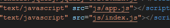
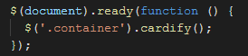

Dado un contenedor busca todas las imágenes que encuentre dentro y las reemplaza por un nuevo elemento <'figure'> <'figure'> que contenga la etiqueta (<'img'>) además de un <'figcaption'> con el texto del atributo alt de esa imagen.
TENER EN CUENTA
PASO1:
Tener en cuenta que debe de contar con un (.container) y dentro de ella etiquetas (<'img'>),luego de ello en el archivo html debe realizar el siguiente enlace.
PASO2:
Despues de enlazar los archivos, debes llamar al plugin que tiene el nombre de cardify().